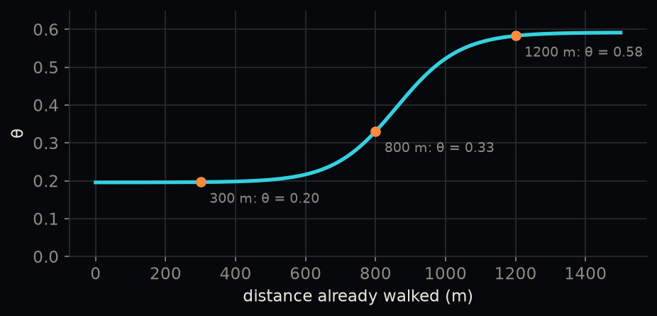

Methods
Shadows, routes and the cost of a sunny metre.
Pipeline
- Heights. The 2022 LiDAR survey gives the height of the ground, every building and every tree at 1 m.
- Shadows. For 24 sun positions (June 21 and August 1, 8:00–19:00), we look from a point every 2 m along each sidewalk towards the sun. The point is in building shade if a building, bridge or the terrain is in the way, in tree shade if only trees are, and otherwise in the sun.
- Sidewalks. Each stretch of sidewalk gets its metres of sun, tree shade and building shade for every hour.
- Routes. For every walk we find two routes: the shortest, and the coolest, which has the lowest shade-weighted cost below.
The cost of a sunny metre
We use the cost function of Wen et al. (2025):
\[C = L_{\text{sun}} + (1 - 0.5\,\theta)\,L_{\text{tree}} + (1 - \theta)\,L_{\text{building}} + (1 - 1.5\,\theta)\,L_{\text{indoor}}\]
A metre in the sun costs 1. A metre in tree shade costs a little less (1 − 0.5θ), a metre in building shade less again (1 − θ), and an air-conditioned indoor metre the least (1 − 1.5θ): tree shade sits between sun and building shade. The reward θ grows with the distance already walked, so shade matters more the longer you have been in the heat:
Because θ stays near 0.2 for the first 500 m, the coolest walk on a short trip only leaves the shortest one when that costs almost no extra distance.
Walks home from transit
Every home within 1.2 km of a frequent stop is one walk, from the stop to the home (431,100 walks). Results are always reported by trip length (under 300 m, 300–800 m, 800–1,200 m), and places are only compared within one length band, because short walks rarely have any alternative. Rapid transit and high-frequency bus are reported separately.
Walking the other way (home to stop) gives the same answer: for 500 walks of at least 400 m, the mean sun reduction is 14.2% one way and 14.2% the other (correlation 0.990).
Metrics
| Metric | Definition |
|---|---|
| Sun share | metres in the sun on the shortest path ÷ its length |
| Sun reduction | (sun on shortest − sun on coolest) ÷ sun on shortest |
| Detour | (coolest length − shortest length) ÷ shortest length |
| Weighted exposure reduction | (C of shortest − C of coolest) ÷ C of shortest |
| No cooler option | sun reduction below 2% (the break after the spike at 0 in the distribution of 300–1,200 m walks) |
| Indoor Contribution Index | (1 − Lcoolest ÷ Lshortest, outdoor) × indoor share of the coolest path’s shade (Wen et al. 2025) |
Sun reduction and weighted exposure answer different questions: the first is how much sun you can avoid, the second how much the walk’s heat burden falls when shade is valued at θ. With θ around 0.2, avoiding one metre of sun lowers C by only about 0.15–0.2 m, so weighted exposure falls roughly a tenth as much as sun.
Indoor scenarios (University City)
Each mapped entrance is linked to the nearest sidewalk, and passages through a building count as indoor, air-conditioned walking. Three cases are compared: outdoor only, adding the buildings open without a Penn ID, and adding all mapped buildings. The shortest route is always the outdoor one.
How we checked
The five rapid-transit stations with the largest sun reduction were checked by eye on aerial photos (see Results).